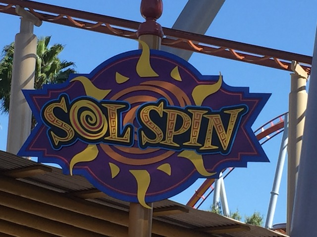
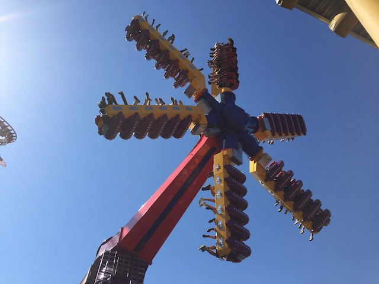
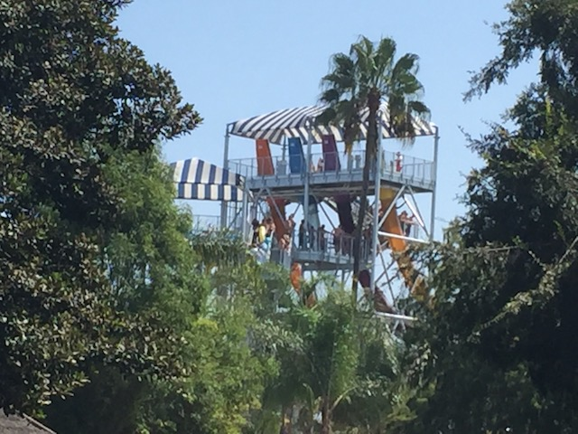
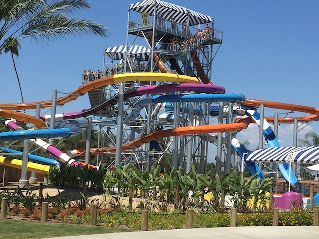
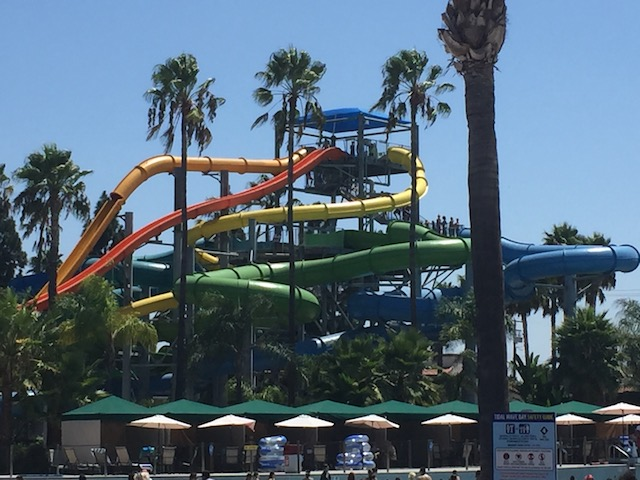

| |
Knotts Summer 2017
All right. Time for another update. We're back at Knotts Berry Farm to check out all the various random stuff that they've added for 2017, as well as just some various fun throughout the summer. And to make things a bummer, it appears that Sol Spin is currently closed. Aww. =(
 It's always good to see more Schwarzkoph Shuttle Loops being saved and still running.
It's always good to see more Schwarzkoph Shuttle Loops being saved and still running.
Construction update on the newest food addition to Knotts Berry Farm. The Boardwalk BBQ.
Looking foreward to trying this place out later this year.
 Still one of the best coasters not only at Knotts, but one of the best coasters in California.
Still one of the best coasters not only at Knotts, but one of the best coasters in California.
 Hmm. There's something up with Coast Rider. But I'm not sure what.
Hmm. There's something up with Coast Rider. But I'm not sure what.
Oh yeah. They added shin guards to the ride. And I just have to rant about these for a moment. If you know me, then you know that I really do not like shin guards. I don't like them on any of the RMCs or any of those Premier coasters. But the argument for those was always "These rides do all sorts of inversions. We need to restrain riders legs". And while they annoy me, I'll always take them over OTSRs (I know all the horror stories people tell of the Premier coasters back when they had them. Thank god they were all removed by the time I got to any of them. Well, except for Speed. But that never had any headbanging. And it doesn't exist anymore anyways). But it was usually reserved for those rides. Well, thanks to some dumbass kid trying to leave the ride before it ended (OMG! Seriously! DON'T F*CKING TRY AND LEAVE THE RIDE UNTIL IT'S BACK IN THE STATION AND YOUR RESTRAINT IS UP!!! YOU STUPID F*CKING MORON!!!), they added shin guards as a means to prevent this from happening again. Great. More idiot-control measures. Except while the shin guards are mildly annoying on RMCs and Premiers, they are SUPER ANNOYING here. Seriously, they feel tacked on, and have NO padding whatsoever. It's just a metal bar with some black cover that doesn't really help. And it smacks your legs at EVERY turn, and for EVERY brakes you pass through. This change is so annoying and obnoxious that I actually had to tweak my Coast Rider Review and actually lower the rides ranking! Yeah! These shin guards are bad enough that they actually brought the ride down, making it without a doubt, my least favorite Wild Mouse. Thanks a lot dumbass kid.
I spy with my little eye, the last peices of Boomerang track.
That plot of dirt is going to amount to so much more than Boomerang & Riptide ever did (Seriously, I'm really looking foreward to Hang Time).

Hey look! Sol Spin opened up! Let's ride!

It doesn't run quite as crazy of a program as Samauri @ Lagoon. So it's not as good of a Top Scan as that. But still! We have a freaking Top Scan in Southern California! Even with lame programs, they're still some of the best flat rides out there, and I'm super happy that these rides are starting to catch on, with both Sol Spin coming here, and a Top Scan added to Carowinds also this year. I really hope this becomes a trend. =)
OK. Please let me up there and take all the coins. Thank you very much.
OK. Time for our other visit to Knotts Berry Farm. Or are we actually going to Knotts Berry Farm today?
Well for now, we're actually going to check out their adjacent water park, Soak City. I know it's technically a seperate park with its own admission. But my season pass gets me in for free, and they did add some new slides. Plus, it's a lot of fun. So yeah. We're here.
 First up, we're checking out their new Family Raft ride. It was a good ride, definetly better than the one at Cowabunga Bay, or Schlitterbahn, or Lost Temple Rapids @ SFHH. But it would've been more fun with more people in the raft (Join us next time Evan).
First up, we're checking out their new Family Raft ride. It was a good ride, definetly better than the one at Cowabunga Bay, or Schlitterbahn, or Lost Temple Rapids @ SFHH. But it would've been more fun with more people in the raft (Join us next time Evan).

Ooh. I spy with my little eyes, Trap Door pods.

Yep. This year, Soak City added four new trap door slides. And I gotta say. These things are really good. Definetly my favorite Trap Door slide aside from the straight down ones. It's much better than all the helix ones. And all the twisty stuff, it really provides a lot of laterals. The ride is much more than the just the Trap Door drop. =)
 Also part of the Shore Break complex are these tube slides. Where they have a little bit of twisty enclosed bits, and then either a double down drop, or a straight down drop. They're both really fun. I prefered the straight drop, though that might change with more weight on the Double Down.
Also part of the Shore Break complex are these tube slides. Where they have a little bit of twisty enclosed bits, and then either a double down drop, or a straight down drop. They're both really fun. I prefered the straight drop, though that might change with more weight on the Double Down.

While not a new slide, Old Man Falls got some love with a brand spanking new paint job. And while I'm not crazy about the orange, I do love all the colors on the tube slides down below. And I don't care that Old Man Falls is a clone of Taboo Tower. I still really like it, and am happy I got to slide down Pointbreak today (the straight drop down).
"Now you be a good chicken and behave. You know what they do to bad chickens around here."
Xcelerator is closed!? And so's Montezooma!? F*CKING LAME!!! And considering all the bad stuff I'm hearing about Xcelerator, I'm hoping it's all untrue and that it reopens ASAP. Seriously, I'm just gonna drive on down immidietly once I hear that the ride is back open again.
OK. Screw all the other cool stuff Knotts has gotten this year. Because we've reached the peak of Knotts 2017 accomplishments. That's right. The Boardwalk BBQ has finally opened up! =)
They had pretty good BBQ. Yeah. I can think of several BBQ resteraunts in So-Cal that are better. But as far as theme park food goes, this is pretty good and above average. But there's one thing that really makes this place cool.
They have Boysenberry BBQ sauce here. That amazing stuff they put on the Boysenberry Wings & Meatballs, you can get it here. It's a shame that there was only a little bit left as I wanted to smother my Tritip with it (though that does show just how popular that stuff is). I think you can buy that Boysenberry BBQ sauce in the shops by Mrs. Knotts. I gotta get that sometime and make my own Boysenberry Wings and bring them to a party. That stuff is f*cking crack.
Yeah. It's a bit more crowded today. Not a fan of that. But at least the park is making more money.
OK. I still suck at these shooting dark rides. But at least I don't suck quite as much.
Oh yeah. That Ghost Town Alive thing is also new for this year. Yeah, it's an upcharge. But it's only $6. Might as well check it out.
I had low expectations as I've never been a big fan of the VR technology (though I will admit that Revolution is fun as VR. The problem with that is that it completely DESTROYs the operations). But actually, this was really cool. It actually kind of felt like being in another world. That almost never happens. So good job Knotts.
 You knew that we just had to ride this.
You knew that we just had to ride this.
"No matter how many times I ride it, I'm still amazed at just how good Pony Express is. It truly must be, THE BEST RIDE EVER!!!!"
 Yeah, Silver Bullet is fun and all. But I want Xcelerator open god damn it!
Yeah, Silver Bullet is fun and all. But I want Xcelerator open god damn it!
Ooh. Since my last visit, Sol Spin apparently got a longer cycle. Honestly, I didn't notice too much of a difference. But hey. Still the best flat ride at Knotts.
"Welcome to La Revolution! Please keep your hands and arms inside the car, provided the car can keep on the pendelum. Now sit up straight, hold on tight, and scream like you're at the Ohio State Fair!"
It's bad enough that Xcelerator is closed since that's the best ride in the park. But Montezooma's Revenge as well? That just sucks. =(
 Hey. At least Ghostrider is still open. And that's a really good ride. Much better since they retracked it. Well, everything Knotts has opened for 2017 has been a big success, and I hope to see more cool stuff (such as Hang Time) from them in the future.
Hey. At least Ghostrider is still open. And that's a really good ride. Much better since they retracked it. Well, everything Knotts has opened for 2017 has been a big success, and I hope to see more cool stuff (such as Hang Time) from them in the future.
Home
|